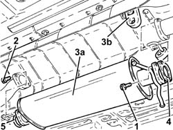
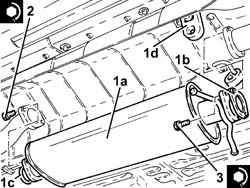

1076B30 front exhaust silencer - r + r
- Path
- Procedures > 10 ENGINE > 1076 EXHAUST PIPES AND SILENCERS > 1076B exhaust pipes and silencers > 1076B30 front exhaust silencer - r + r
- Kind
- repair procedure (removal / refitting; the operation number is the code)
- Applies to
- engines: 2.0 JTS, 2.0 JTS; all production periods
- Interactive page
- https://sloeber94.github.io/elrnDB-a156/en/#/3237751
Applies to: engines: 2.0 JTS, 2.0 JTS; all production periods
 Removing
Removing
 Refitting
RefittingPosition the vehicle on the ramp.
1. Undo the bolts securing the front exhaust silencer to the exhaust pipe front section.
2. Undo the bolts securing the front exhaust silencer to the intermediate exhaust silencer.
3. Remove the front exhaust silencer (3a) after releasing it from the flexible supports (3b).
4. Remove the front gasket.
5. Remove the seal.

Applies to: engines: 2.0 JTS, 2.0 JTS; all production periods
Refitting
Removing1. Refit in its seating the front exhaust silencer (1a) complete with gasket (1b) and seal (1c), then secure it to the relevant flexible supports (1d).
2. Tighten the bolts securing the front exhaust silencer to the intermediate silencer to the specified torque.
 | Fastening | Component | Ø | Value (daNm) |
|---|---|---|---|---|
2 | Bolt | FRONT EXHAUST SILENCER | M10 | (Intermediate exhaust silencer side) 5.9 ÷ 7.2 |
3. Tighten the bolts securing the front exhaust silencer to the front section of the exhaust pipe.
| Fastening | Component | Ø | Value (daNm) |
|---|---|---|---|---|
3 | Bolt | FRONT EXHAUST SILENCER | M10 | (Exhaust pipe front section side) 5.9 ÷ 7.2 |

Applies to: engines: 2.0 JTS, 2.0 JTS; all production periods
Remove the car from the ramps.